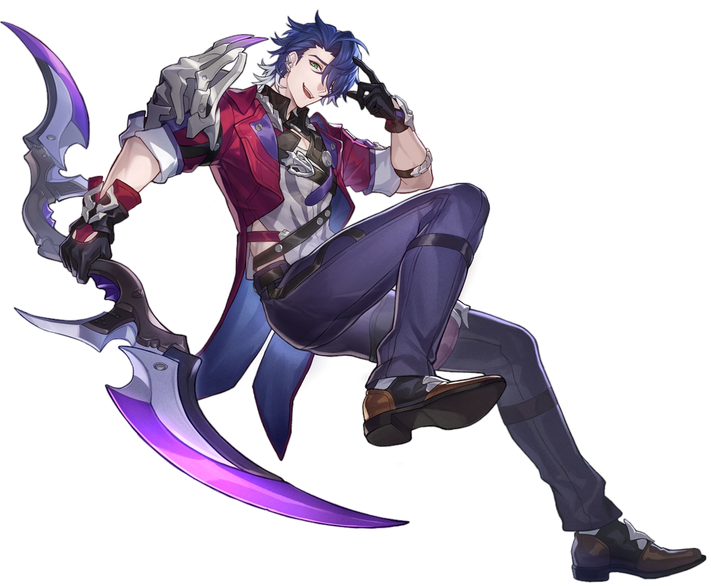
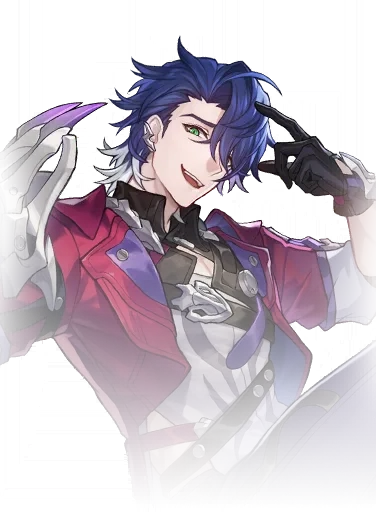

Descripcion del personaje
Sampo es un personaje de 4 estrellas de Honkai Star Rail de la Vía de la Nihilidad y a pesar de su extraño comportamiento en la historia del juego, se trata de un personaje que la verdad es que está bastante bien y que recomiendo.
Su especialidad es la aplicación de DoTs (daño en el tiempo) a los enemigos para irles mermando la salud de forma lenta pero constante. Además, es capaz de aplicar una gran cantidad de DoTs a varios enemigos de forma simultánea, por lo que es un personaje que destaca mucho sobre todo en situaciones de Multi Target (lo cual no significa que en Single Target no se pueda usar).
Introduccion al personaje
Sampo es conocido por su personalidad carismática, astuta y un tanto misteriosa. Actúa como un mercader y un contrabandista en el mundo del juego, y suele involucrarse en situaciones turbias, moviéndose entre distintos planetas y facciones. Sampo se presenta como un personaje que siempre parece estar un paso adelante, buscando sacar provecho de cada situación con su ingenio y habilidades de persuasión.
Sampo es conocido por ayudar al equipo principal en momentos clave, pero también por tener sus propios motivos ocultos. Se mueve entre diferentes facciones y tiene contactos en todo el universo, lo que le da acceso a información y recursos valiosos. A pesar de su falta de una brújula moral clara, a veces se ve involucrado en la misión del Astral Express, aunque siempre con una actitud de "negocio es negocio".

Calidad del personaje

VIA del personaje
Nihilidad

Estadisticas del personaje
- PV: 1023
- ATQ: 617
- DEF: 396
- VEL: 102
- Provocacion: 100